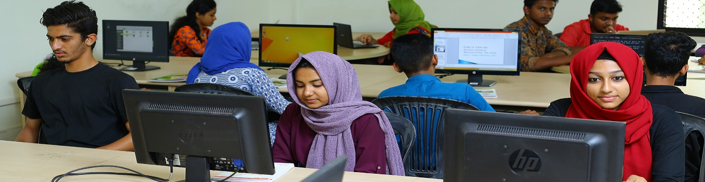

Computer Applications

The Department of Computer Applications was established in the year 2010. The department curriculum has to keep abreast of the new concepts and applications and keep the students updated. The department is well equipped and Project work is a part of the curriculum. Department exposure to latest technologies to inculcate ideas which bridge the industry gap in IT sector by bounding to social ethics by conducting workshops, seminars, techtalks. Department encourage student-centric learning by allowing students to share in decisions, believing in their capacity to lead, and remembering how it feels to learn by student communities.
Objectives
The basic objective of the Department is to open a channel of admission for computing courses for students, who have done the 10+2 and are interested in taking computing/IT as a career. Department offers foundation graduate Programmes these will act as a feeder course for higher studies in the area of Computer Science/Applications. And also develop skills in software development so as to enable the graduates to take up self-employment in Indian and global software market
Vision
To become a centre of excellence in the field of computer science and applications to produce globally competent graduates with moral values committed to build vibrant nation.
Mission
-
To provide high quality education with an emphasis on basic principles of computer applications
-
Enhancing student centric learning and social engagements with moral and ethical values, and also with life skills.
-
To provide quality trainings and guidance to the students in the field of computer applications for make them globally employable.
-
To establish globally recognized research centers and expose the students to broad research experience.